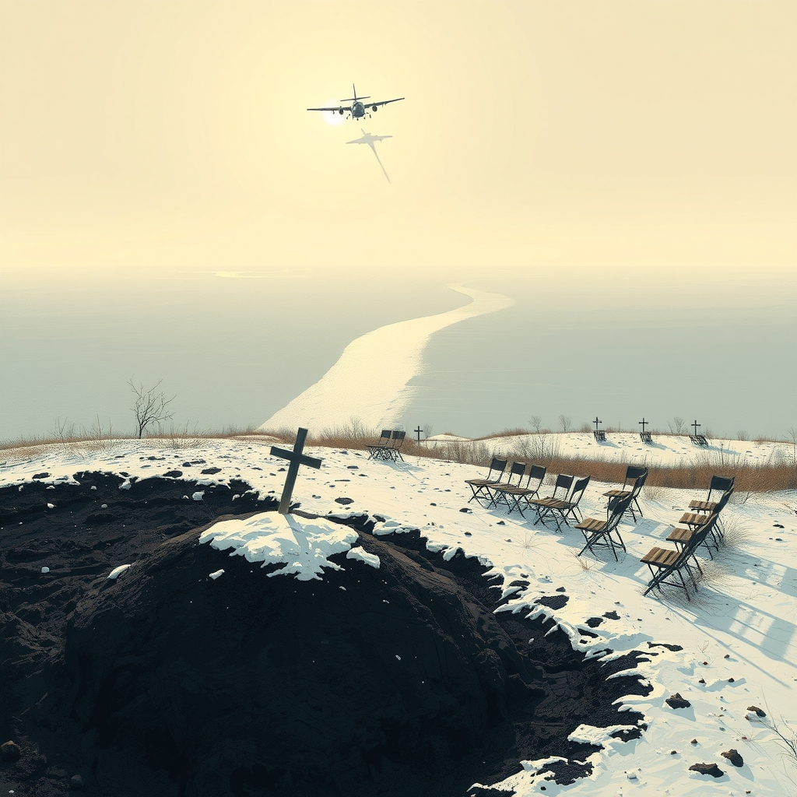
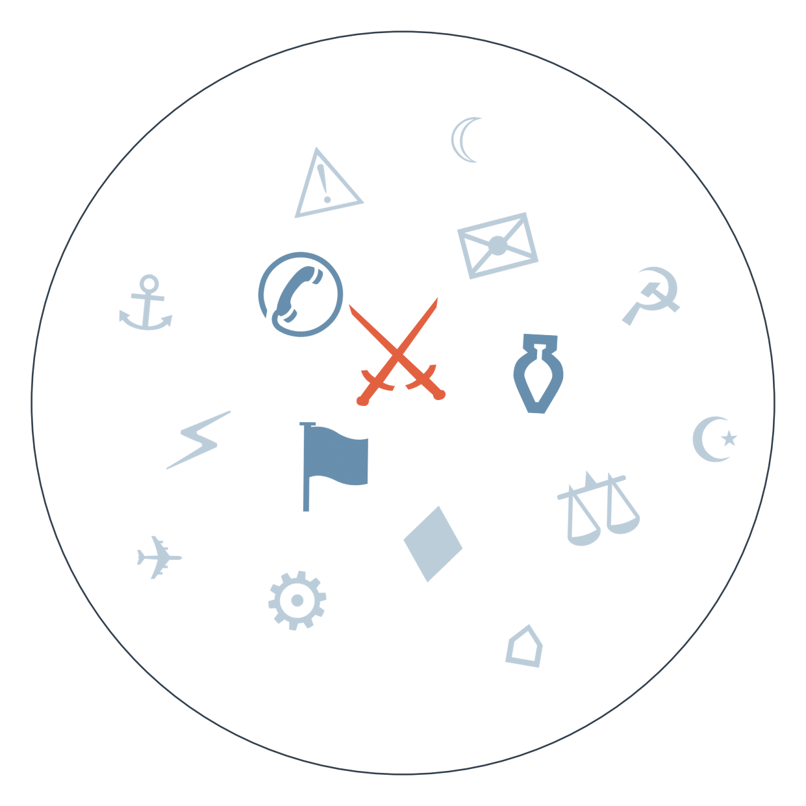

Ранковий бріф · огляд світової преси

Генеральний прокурор України Руслан Кравченко подав у відставку — його підлеглого підозрюють у "кришуванні" шахрайських колл-центрів, і він вирішив піти, перш ніж скандал розрісся. Це перше падіння посадовця такого рівня відколи почалися обшуки в ОГП, і воно ставить питання, хто саме очолить прокуратуру в момент, коли антикорупційні органи вперше за довгий час показують зуби (триває: антикорупційна операція «Карфаген»).
АфД здобула історичний результат на виборах у Саксонії-Ангальт — понад 44%, найкращий показник ультраправих в об'єднаній Німеччині, хоча й без абсолютної більшості. Мерц назвав це шоком, а тисячі вийшли на вулиці Берліна проти партії — але саме питання, чи знайдуться малі партії, готові заблокувати АфД від влади в землі, лишається відкритим (триває: радикалізація сходу Німеччини).
Росія відновила удари по Києву одразу після завершення паузи, яка збіглася з візитом Віткоффа і Кушнера — вибухи пролунали вночі, є перші загиблі й поранені. Пауза виявилась не жестом доброї волі, а технічною паузою під конкретний візит, і це саме по собі відповідь на питання, чи означав приїзд посланців Трампа реальний прорив (триває: дипломатичні спроби завершення війни в Україні).

Похорон Ратка Младича
🇭🇷 Klix (Боснія) і кабінет президента Хорватії Мілановича: наголошують на небезпечному підриванні миру та вимагають від уряду Хорватії реакції, звинувачуючи Брюссель у мовчанні.
Замовчують: жодне з проаналізованих джерел не пояснює, чому саме сьогодні і чому саме в такому форматі — питання про те, хто санкціонував військові почесті, лишається без відповіді.
Чому розходяться: сербські медіа фіксують масштаб народної підтримки, бо це працює на внутрішню аудиторію і націоналістичний електорат; словацьке видання, ймовірно, спирається на офіційну версію відсутності Вучича, щоб показати "вимушену стриманість" Белграда перед Брюсселем; хорватські джерела використовують подію як важіль тиску на переговори про вступ Сербії до ЄС; Politico дивиться на це як на структурну суперечність всієї моделі розширення блоку.
Перемога АфД у Саксонії-Ангальт
Замовчують: соціально-економічні обіцянки АфД, що могли пояснити електоральний успіх у бідній землі, — практично не підхоплені за межами Австрії й Німеччини.
Чому розходяться: німецькі медіа переживають кризу довіри до власної демократії і тому пишуть про інституційні наслідки; британська преса традиційно тримає дистанцію й фіксує факт заяви АфД без емоційної оцінки; загальноєвропейські видання екстраполюють на весь континент; французька преса обережна, бо власний крайньоправий табір не хоче зайвих паралелей напередодні власних виборів.
Антикорупційний тиск в Україні: обшуки НАБУ і САП в Офісі генпрокурора → відправлення під варту співробітника ОГП → сьогоднішня відставка самого генерального прокурора Кравченка через скандал навколо колл-центрів → далі це веде до питання, чи торкнеться розслідування вищих щаблів, ніж очікувалось, і хто отримає посаду в момент максимальної уваги партнерів до реформ.
Радикалізація сходу Німеччини: історичний рекорд АфД у Саксонії-Ангальт → шок Мерца і протести тисяч у Берліні → попереду формування коаліції в землі (орієнтовно 20 вересня) → це веде до перевірки, чи витримає "фаєрвол" проти співпраці з АфД ще один електоральний цикл, чи малі партії почнуть шукати компроміс заради стабільності влади в землі.
Ескалація навколо Ормузької протоки: заява Ірану про "заборонену зону" → нафта дорожчає до шеститижневого максимуму → сьогодні хусити звинувачують Саудівську Аравію в ударі по в'язниці в Ємені і йеменські урядові сили заявляють про контрнаступ з метою повернути Сану → це веде до подальшої регіоналізації конфлікту, де межа між ірано-американським протистоянням і громадянською війною в Ємені стирається.
Нафта зросла до шеститижневого максимуму на тлі нових ударів у зоні США-Іран та ескалації навколо Ємену.
Єна зміцнилась до піврічного максимуму, за оцінкою JPMorgan, пробиття рівня 155 за долар може прискорити закриття коротких позицій на понад 100 мільярдів доларів.
ФРС наближається до засідання FOMC 12 вересня в умовах подвійного тиску: сильні дані ринку праці й нова нафтова інфляція штовхають до підвищення ставки, тоді як Трамп публічно вимагає зниження.
Торговельна війна Канада-США розширюється: за повідомленнями канадських і американських ЗМІ, Трамп погрожує заборонити продаж літаків Bombardier у США, якщо компанія не перенесе виробництво; японський пивовар Sapporo переносить виробництво в США через тарифи на канадське пиво.
Bild ставить поруч гороскоп на тиждень і застереження колишнього глави БНД про те, що "ситуація з Росією загострюється" — паніка й буденність в одній стрічці, як завжди.
Fakt розганяє лавину смертей на Кавказі як особисту трагедію ("33 альпіністи в пастці"), тоді як профільні джерела регіону обмежуються сухою цифрою загиблих без деталей — типовий розрив між масовим жахом і офіційною стриманістю.
Blick іронізує над скандалом на Ейфелевій вежі як над курйозом "прощавай, Égalité", хоча тема вже отримала серйозне політичне звучання і розслідування мера Парижа.
Відставка генпрокурора Кравченка стане тестом для партнерів: ЄС і МВФ уважно стежитимуть, чи призначення наступника буде незалежним від політичного тиску, адже від цього залежить довіра до всієї судово-правоохоронної реформи, яку вимагають для подальшого фінансування.
Відновлення ударів по Києву одразу після завершення візиту Віткоффа і Кушнера підтверджує, що пауза була технічною, а не сигналом деескалації — це напряму впливає на енергетичну підготовку до зими і на очікування Зеленського, який вже говорить про війну "до зими".
Схвалення Єврокомісією заявки Києва на купівлю ракет Patriot — конкретний крок у постачанні систем ППО напередодні очікуваного сезону масованих ударів по енергетиці.
Тема скорочення 50 тисяч робочих місць у Volkswagen знову зникла з коментарів попри те, що саме економічна тривога в бідних східних землях частково пояснює тріумф АфД у Саксонії-Ангальт — мовчить практично вся преса за межами Австрії й Німеччини: гучний соціальний сюжет витіснений політичною сенсацією виборів.
Пошуки зниклих після зсуву в Гьїронгу (Тибет) тривають понад тиждень без офіційної статистики жертв — мовчить китайська державна преса централізовано, тема вимагає ресурсу на незалежне розслідування, якого в закритому регіоні просто немає.
Спроба урядових сил Ємену відбити Сану у хуситів — сюжет, спроможний змінити баланс всієї війни в Ємені, — присутній лише в одному західному джерелі (Al Jazeera) в сьогоднішньому дайджесті; тему витіснила новина про удар по в'язниці, і жодне інше велике видання її поки не підхопило.
Міноборони Південної Кореї публічно критикує КНДР за "безпрецедентне зміцнення кордону" — можливий сигнал зростання напруги на півострові напередодні можливого саміту Трамп-Кім. Ґрунтується на одному джерелі (Kommersant) — державне російське видання, тому новину варто сприймати з поправкою на можливу упередженість джерела.
Молдова готується до відключень газу для понад 10 тисяч споживачів на п'ять днів, Придністров'я запасається дровами — сигнал енергетичної вразливості регіону перед зимою. Одне джерело (Newsmaker).
Поліція східнонімецької землі знешкодила 21 вибуховий пристрій біля електромережі — можливий новий епізод саботажу інфраструктури в Європі, перегукується з естонською диверсією й підстанцією в Дормагені. Одне джерело (Digi24), потребує підтвердження.
Підсумок прогнозів із горизонтом сьогодні чи раніше:
— Законопроект демократів проти перейменування Lake Ontario (горизонт 08.09) — НЕ СПРАВДИЛОСЬ: жодних підтверджень внесення в дайджесті немає.
— Державний похорон Младича з військовими почестями (горизонт 10.09, відбувся достроково) — СПРАВДИЛОСЬ за більшістю джерел, хоча одне видання (Denník N) заперечує офіційний статус церемонії.
— Німеччина оголосить додаткові санкції проти Росії понад закриття консульства в Бонні (горизонт 05.09) — НЕ СПРАВДИЛОСЬ: анонсу нових санкцій не було.
— Німеччина оголосить заходи щодо консульства РФ у Бонні (горизонт 19.09) — СПРАВДИЛОСЬ достроково: консульство РФ у Бонні закрито, Росія відповідає закриттям німецького консульства в Петербурзі та філії Гете-Інституту.
— Справа "Карфаген" призведе до відставки/затримання рівня заступника генпрокурора (горизонт 19.09) — СПРАВДИЛОСЬ з перевищенням: у відставку пішов сам генеральний прокурор.
Рахунок: 4 з 8 (базово приблизно 3 з 8) — цей підсумок додає три нові підтвердження до попереднього рахунку 1 з 4.
Решта активних прогнозів (горизонт ще не настав):
Рішення FOMC щодо ставки (горизонт 12.09)
Обмін ударами США-Іран (горизонт 16.09)
Тристоронній саміт Путін-Трамп-Зеленський (горизонт 16.09)
Продовження санкцій ЄС попри блокаду Словаччини (горизонт 17.09)
Звернення Саудівської Аравії до РБ ООН (горизонт 10.09)
Кадрові зміни в оборонному відомстві Естонії (горизонт 17.09)
Протести IG Metall проти скорочень у Volkswagen (горизонт 18.09)
Слухання Конгресу США щодо удару по весіллю (горизонт 18.09)
Рішення Південної Кореї щодо ситуації навколо Ормузької протоки (горизонт 18.09)
Блокування АфД малими партіями у Саксонії-Ангальт (горизонт 20.09)
Наші:
1. Наступником Кравченка на посаді генпрокурора стане людина, тісно пов'язана з Офісом президента, а не незалежна компромісна фігура — до 22.09
2. Ескалація Ємен-Саудівська Аравія переросте у пряму серію масштабних ударів, а не залишиться локальним епізодом — до 22.09
3. Мерц чи керівництво ХДС оголосять кадрові зміни або перегляд стратегії щодо співпраці з АфД на рівні землі — до 22.09
Кажуть інші:
Зеленський (за угорським 444): очікує, що США спробують відновити переговори Росія-Україна до настання зими.
Bloomberg (за 15min): після візиту посланців Трампа стало зрозуміліше, чого Путін прагнутиме найближчими місяцями — без строку.
Базова лінія у прогнозах. Відсоток «базово» — це ймовірність події за інерцією, якщо ніхто нічого не робитиме й нічого не зміниться. Друге число — наша впевненість. Прогноз має сенс лише тоді, коли ці числа розходяться: збіг означає, що ми просто описали поточний стан.
Відсотки в карті уваги. Частка країни в денному обсязі зібраних матеріалів. Не показник важливості події, а показник того, скільки місця країна зайняла в новинному потоці за добу. Різкий стрибок частки зазвичай означає, що в країні щось відбувається.
Стрічки, які не відповіли. Не відповіли (4): Vlast.kz, Daily Nation, TVN24, Milenio